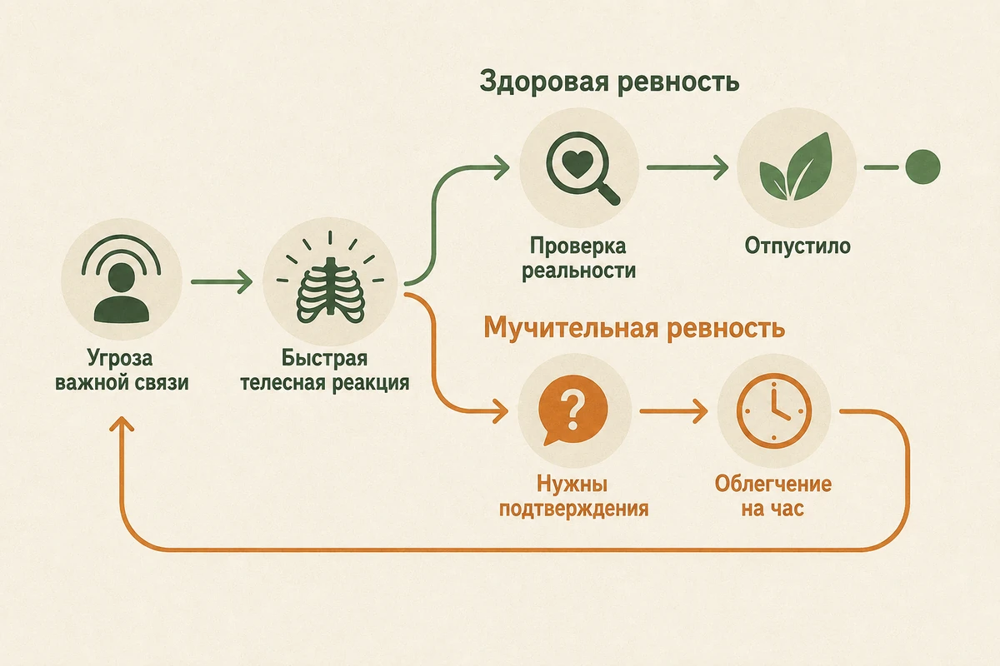
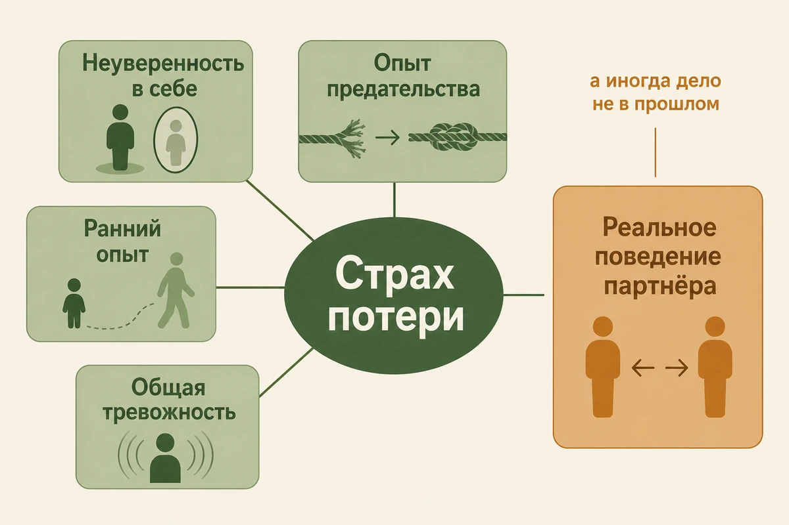
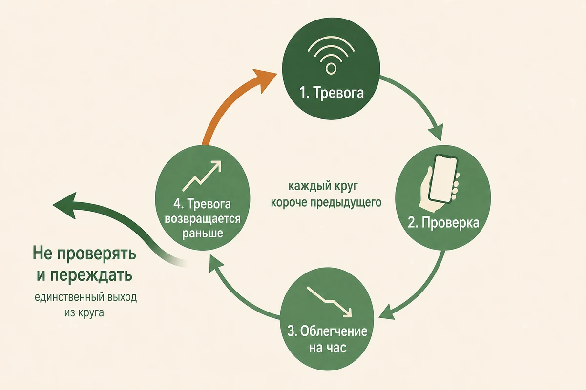
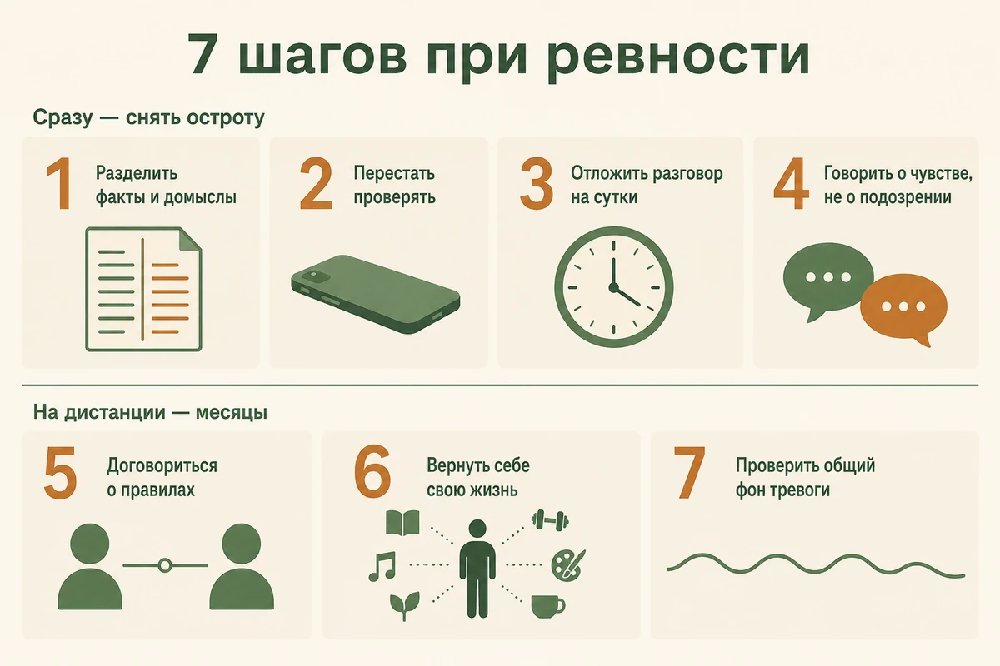

Ревность: почему возникает и как перестать себя мучить
Обновлено: 03.09.2026 · 14 минут чтения
Ревность — не порок и не доказательство любви. Это сигнальная система привязанности: она включается, когда мозг считывает угрозу важной связи, и в умеренном виде есть почти у всех. Проблемой она становится не тогда, когда появляется, а когда перестаёт выключаться — срабатывает без повода, не успокаивается от объяснений и требует всё новых подтверждений. Ниже — почему у одних она тише, а у других не отпускает; как отличить обоснованную ревность от тревожной; почему проверки телефона делают только хуже; где проходит граница с контролем и что делать, если ревнуете вы или ревнуют вас.
- Если вас накрыло прямо сейчас
- Что такое ревность и зачем она нужна
- Где она живёт: в голове, в теле и в поступках
- Почему одни ревнуют сильнее других
- Почему я ревную, хотя партнёр ничего не делает
- Обоснованная ревность и тревожная: как отличить
- Почему проверки не помогают
- Ревность к прошлому партнёра
- Где ревность переходит в контроль
- 7 шагов, чтобы перестать себя мучить
- Что делать, если ревнует партнёр
- Когда пора к специалисту
- Частые вопросы
Если вас накрыло прямо сейчас
Если вы открыли эту страницу посреди приступа, начните отсюда, а к объяснениям вернитесь позже.
- Не проверяйте первые 20 минут. Ни переписку, ни соцсети, ни «кто был онлайн». Это самое трудное и самое важное.
- Запишите, что произошло фактически. Только то, что можно было бы показать другому человеку: «не отвечал с 18:00 до 20:00».
- Отдельно запишите, что вы предположили. «Наверное, он был с кем-то», «ему со мной надоело». Разница между двумя списками обычно и есть источник боли.
- Назовите чувство. Страх, злость, обида, стыд — вслух или письменно. Названная эмоция теряет часть силы.
- Не начинайте разговор на пике. Всё, что вы скажете сейчас, прозвучит как обвинение, даже если вы этого не хотите.
- Вернитесь к ситуации, когда отпустит. Обычно на это уходит от получаса до нескольких часов.
Что такое ревность и зачем она нужна
Ревность возникает в треугольнике: есть вы, есть близкий человек и есть кто-то третий — реальный или воображаемый, — кто может занять ваше место. Этим она отличается от зависти, где третьего нет, а есть чужое благо, которого хочется себе.
Эволюционно у ревности понятная задача: заметить угрозу важной связи раньше, чем связь распадётся, и заставить что-то сделать. Поэтому она устроена как сигнализация — срабатывает быстро, до всякого анализа, и сразу телом: сжимается желудок, разгоняется сердце, сужается внимание. С этим бесполезно спорить логикой в момент срабатывания, ровно как бесполезно уговаривать себя не вздрагивать от резкого звука.
Проблема сигнализации не в том, что она есть, а в том, что у некоторых людей она настроена слишком чувствительно и не умеет отключаться. Здоровой ревность обычно называют короткую: человек замечает тревогу, проясняет, что происходит на самом деле, получает объяснение — и возвращается к обычной жизни. Мучительной она становится тогда, когда тревога не проходит и после прояснения: подтверждений всё время не хватает, и за каждым успокоением быстро приходит следующее сомнение.

Где она живёт: в голове, в теле и в поступках
Ревность удобнее разбирать не как одно чувство, а как три разные вещи, которые у конкретного человека бывают выражены очень по-разному. Одну из самых известных многомерных моделей ревности предложили Сьюзан Пфайффер и Пол Вонг в 1989 году: они выделили когнитивную, эмоциональную и поведенческую составляющие.
- В голове — подозрения, мысленные проверки, воображаемые сцены, сравнение себя с другими. Этого никто не видит, но именно эта часть съедает больше всего сил.
- В теле — укол при упоминании другого человека, тревога от неотвеченного сообщения, ощущение пустоты под рёбрами.
- В поступках — расспросы, проверки переписок, попытки повлиять на круг общения. Это единственная часть, которую видит партнёр, и по ней он судит обо всём остальном.
Различие практическое, а не теоретическое. Один человек мучается внутри, но снаружи ничем этого не показывает — ему нужно работать со страхом потери. Другой почти не страдает, но по привычке проверяет телефон — ему нужно менять поведение, и это, как ни странно, проще. Понять, какая из трёх сторон громче именно у вас, помогает тест на ревность: пятнадцать вопросов о мыслях, чувствах и поступках, результат сразу и без регистрации.
Почему одни ревнуют сильнее других
За сильной ревностью часто стоит не подозрительность как черта характера, а страх потерять отношения. Но причины бывают разными, и у одного человека их обычно несколько сразу.
- Неуверенность в себе. Если человек в глубине не понимает, за что его вообще выбрали, любой третий автоматически кажется более подходящим кандидатом. Ревность тут — не про партнёра, а про отношение к себе; проверить это отдельно можно тестом на самооценку.
- Опыт предательства. После измены — своей или в родительской семье — мозг перенастраивает сигнализацию на максимальную чувствительность. Формально это обучение: один раз пропустил угрозу, больше не пропущу. На практике сигнализация начинает звенеть на всё подряд.
- Ранний опыт непредсказуемой близости. Если в детстве близкие то были рядом, то исчезали без объяснений, взрослый человек нередко живёт с фоновым ожиданием, что его снова оставят. Это одна из тем, с которыми работает схема-терапия.
- Общая тревожность. Иногда ревность — не самостоятельная проблема, а просто тема, которую нашла себе тревога. Признак простой: тревожно не только в отношениях, а более или менее везде. Тогда начинать стоит с тревоги, а не с партнёра — техники есть в статье о том, как справиться с тревогой.
Пятая причина стоит особняком, и её чаще всего пропускают: дело может быть в настоящем. Если партнёр ведёт себя непоследовательно, скрывает очевидное или уже нарушал договорённости, ревность — не искажение, а точная реакция на факты.

Почему я ревную, хотя партнёр ничего не делает
Это один из самых частых вопросов о ревности, и ответ на него неприятный, но обнадёживающий: источник тревоги не обязан находиться в поведении партнёра. Сигнализация может звенеть исправно и при полном отсутствии дыма.
Есть три признака, по которым видно, что дело скорее в вас, чем в отношениях:
- похожая ревность была и в прошлых отношениях, с другими людьми;
- она возникает на нейтральных вещах — на слове, на паузе в переписке, на чужой фотографии;
- объяснения помогают ненадолго: через день нужно новое подтверждение.
Если это про вас, разбираться логичнее не с партнёром, а с тем, что под ревностью: с тревожностью, с отношением к себе и с ожиданием, что вас оставят. Это не значит, что ваши чувства «неправильные» — они настоящие. Это значит, что искать их причину в чужом телефоне бесполезно, там её нет.
Обоснованная ревность и тревожная: как отличить
Это главный вопрос, и ни один тест не ответит на него за вас. Но у двух видов ревности разное поведение, и по нему их можно развести.
| Признак | Обоснованная ревность | Тревожная ревность |
|---|---|---|
| На чём стоит | На конкретных фактах, которые можно назвать | На ощущении, к которому факты подбираются задним числом |
| Как ведёт себя во времени | Появилась после конкретного события | Была и в прошлых отношениях, с другими людьми |
| Реакция на объяснение | Успокаивается, когда ситуация проясняется | Успокаивается на час, потом находит новый повод |
| Охват | Касается конкретного человека и ситуации | Распространяется на всех подряд, включая коллег и прошлое партнёра |
| Что помогает | Разговор о договорённостях, иногда решение об отношениях | Работа со страхом потери, а не сбор доказательств |
Как это выглядит на одной ситуации: партнёр не отвечал два часа.
- Факт: «Он не отвечал с 18:00 до 20:00».
- Домысел: «Наверное, он был с кем-то».
- Катастрофический вывод: «Ему со мной надоело, он нашёл другую».
- Действие: «Посмотрю, когда он был онлайн».
Обоснованная ревность обычно останавливается на первой строчке и идёт разговаривать. Тревожная проскакивает вторую и третью за секунды и сразу оказывается на четвёртой — причём самой убедительной кажется именно третья строчка, хотя фактов в ней ноль.
Частая ошибка — считать, что признать ревность тревожной значит признать себя неправым. Это не так: одно другому не мешает. Ревность может быть и обоснованной, и при этом раздутой сверх фактов, и тогда разбираться приходится с обеими половинами.
Почему проверки не помогают
Проверка телефона, расспросы, «просто посмотреть, кто лайкнул» — самая понятная реакция на тревогу и самая надёжная ловушка. Механизм у неё тот же, что у навязчивых мыслей. Тревога требует определённости, проверка её ненадолго даёт — и вот здесь происходит главное: мозг запоминает не только то, что опасности не было, но и каким способом вы избавились от тревоги. Поэтому в следующий раз желание проверить приходит быстрее и звучит настойчивее.
Отсюда три следствия, которые обычно узнают на своём опыте:
- Порог растёт. Того, что успокаивало месяц назад, уже мало.
- Чистая проверка невозможна. Всегда остаётся то, что не проверено, — и внимание переезжает туда.
- Находки не решают. Даже когда ничего не нашли, облегчение живёт до следующего вечера, потому что доказано отсутствие только в проверенном месте.
Выход неприятный, но рабочий: перестать проверять и пережить тревогу без снятия. Первые разы это тяжело, дальше сигнализация постепенно перенастраивается — примерно так же, как затихает страх у того, кто перестал избегать пугающей ситуации.

Ревность к прошлому партнёра
Отдельный сюжет, который мучает людей годами: ревность не к кому-то настоящему, а к бывшим, к прошлым историям, иногда к фотографиям десятилетней давности. Со стороны это выглядит нелогично — соперника нет, событие закончилось, — и именно поэтому человеку неловко об этом говорить.
Логика здесь всё-таки есть. Вы конкурируете не с реальным человеком из прошлого, а с собственной картинкой этого человека — а картинку вы достраиваете сами, и достраиваете обычно в его пользу. Реальные отношения были живыми и, скорее всего, закончились по понятной причине; воображаемые состоят из одних достоинств и никогда не портятся. Соревноваться с ними невозможно по определению.
Что с этим делать:
- Не собирать подробности. Расспросы о прошлом работают как проверки: каждая новая деталь даёт материал для новой сцены в голове.
- Помнить, что выбор уже сделан. Прошлое партнёра закончилось не случайно, и вы — не запасной вариант, а результат этого выбора.
- Отличать факт от образа. «Они были вместе три года» — факт. «С ней ему было лучше» — сочинение, у которого нет ни одного источника.
Где ревность переходит в контроль
Ревность — это чувство, и за чувство человека не судят. Контроль — это поступки, ограничивающие свободу другого. Граница проходит именно здесь, а не по силе переживания: можно очень сильно ревновать и ничем не ограничивать партнёра, а можно почти не страдать и при этом методично сужать его жизнь.
Признаки, при которых речь идёт уже не о ревности:
- партнёр отчитывается о каждом перемещении, иначе будет скандал;
- круг общения сужается — сначала «этот друг мне не нравится», потом друзей не остаётся;
- проверка телефона стала обязательной и регулярной;
- ревностью объясняют крик, порчу вещей или физическую силу;
- решения о работе, учёбе и внешнем виде принимает не сам человек;
- появляется страх реакции — проще соврать, чем объяснить.
Формула «ревнует — значит любит» опасна тем, что именно ею всё перечисленное и оправдывают. Если вы узнаёте в списке себя, это плохая новость, но не приговор: контролирующее поведение поддаётся работе, пока человек сам его замечает. Если узнаёте партнёра — стоит прочитать, как устроены токсичные отношения, и как выстраивать личные границы.
7 шагов, чтобы перестать себя мучить
- Разделите факты и домыслы письменно. Два столбца: слева только то, что произошло и что можно было бы показать другому человеку, справа — всё, что вы достроили. При тревожной ревности второй столбец обычно разрастается быстрее первого: предположений становится заметно больше, чем проверяемых фактов.
- Перестаньте проверять. Не обязательно бросать всё сразу — так почти ни у кого не выходит. Выберите один вид проверок, например соцсети, и попробуйте отложить его на 30–60 минут после того, как появилось желание. За это время тревога обычно начинает спадать сама, и мозг получает нужный опыт: успокоение приходит и без проверки. Когда это стало получаться, увеличивайте интервал.
- Отложите разговор на сутки. Разговор на пике — это допрос, и заканчивается он одинаково плохо. Если ситуация не связана с безопасностью и может подождать, дайте эмоциям осесть: через несколько часов или на следующий день будет гораздо понятнее, что именно вы хотите обсудить — факт, свою тревогу или подозрение.
- Говорите о чувстве, а не о подозрении. «Мне было тревожно, когда ты не отвечал» — разговор, на который можно ответить. «С кем ты был?» — обвинение, после которого партнёр защищается, и вы получаете ровно ту уклончивость, которой боялись.
- Договоритесь о правилах, а не о доказательствах. Полезно обсуждать, что для вас обоих приемлемо, а что нет. Бесполезно требовать доказательств: они не заканчиваются.
- Верните себе жизнь за пределами отношений. Ревность разрастается в пустоте: чем меньше у человека своего — работы, друзей, занятий, — тем больше места занимает чужое. Это самый медленный шаг и самый действенный.
- Проверьте фон. Если тревожно не только в отношениях, дело может быть не в ревности. Тогда начинать стоит с общей тревожности — например, с теста на постоянное беспокойство.

Бывает так, что механизм понятен, а остановиться всё равно не выходит: вы прекрасно знаете, что накручиваете, и всё равно открываете переписку. В такой ситуации помогает разобрать один конкретный эпизод — что произошло, какую мысль вы к этому достроили и что сделали дальше. Анонимно, без записи, круглосуточно.
Разобрать свою ситуациюЧто делать, если ревнует партнёр
Главная ошибка — бесконечно оправдываться. Отчёты, скриншоты и доказательства работают как проверки, только чужими руками: дают кратковременное облегчение и при регулярном повторении закрепляют саму привычку требовать следующую порцию. Чем добросовестнее вы отчитываетесь, тем прочнее закрепляется привычка.
Что работает лучше: отделить чувство от требования. Признать чувство — «я вижу, что тебе тревожно, и мне жаль» — и при этом спокойно не выполнять требование: «я не буду отчитываться, где я была каждый час». Это не жёсткость, а единственный способ не кормить механизм. Держать такую границу тяжелее, чем оправдываться, зато она даёт партнёру шанс встретиться со своей тревогой, а не заглушать её вами.
И отдельно — про поступки. Если вы ловите себя на том, что заранее продумываете, как объяснить обычную встречу с друзьями, или вам проще соврать, чем сказать правду, — посмотрите ещё раз на список признаков контроля выше. Это уже не про чужие чувства, а про вашу свободу.
Когда пора к специалисту
Поводы обратиться, не дожидаясь, пока «само пройдёт»:
- мысли о партнёре занимают несколько часов в день и мешают работать;
- вы проверяете, хотя решили не проверять, и не можете остановиться;
- ревность повторяется из отношений в отношения с разными людьми;
- вы уже сделали то, о чём жалеете, — прочли переписку, устроили сцену, ограничили общение;
- появляются мысли навредить себе или партнёру.
Работают с этим обычно не с ревностью напрямую, а с тем, что под ней. Когнитивно-поведенческая терапия помогает разобрать автоматические мысли и отказаться от проверок, схема-терапия — добраться до раннего страха быть брошенным. При выраженной тревоге имеет смысл параллельно показаться врачу.
Частые вопросы
Почему я так сильно ревную?
Чаще всего за сильной ревностью стоит не подозрительность, а страх потери. Его питают три вещи: неуверенность в себе, когда человек не понимает, за что его вообще выбрали; прошлый опыт предательства, после которого доверие так и не восстановили; и общая тревожность, для которой отношения — просто самая уязвимая мишень. Реже причина в настоящем: партнёр действительно ведёт себя непоследовательно, и ревность оказывается точной реакцией на факты.
Ревность — это признак любви?
Нет. Ревность — признак привязанности и страха её потерять, а не меры любви. Люди, которые любят сильно и глубоко, могут ревновать мало, а те, кто едва вовлечён в отношения, — очень бурно. Опасна сама формула «ревнует — значит любит»: под ней обычно оправдывают проверки телефона, допросы и запреты, то есть уже не чувство, а контроль.
Как перестать ревновать и накручивать себя?
Начните с того, чтобы перестать проверять: проверка снимает тревогу на час и укрепляет привычку на месяцы, потому что мозг запоминает, что успокоение приходит именно так. Дальше — разделяйте на бумаге факты и домыслы, говорите партнёру о своём чувстве вместо допроса и возвращайте себе жизнь за пределами отношений. Если мысли не отпускают месяцами и вы уже устали от них, это повод обратиться к психологу.
Можно ли ревновать без причины?
Да, и это частая ситуация: источник тревоги не обязан находиться в поведении партнёра. На то, что дело скорее в вас, указывают три признака сразу — похожая ревность была и в прошлых отношениях, она возникает на нейтральных вещах вроде паузы в переписке, а объяснения помогают ненадолго. Тогда разбираться логичнее не с партнёром, а с собственной тревожностью, самооценкой и ожиданием, что вас оставят.
Как перестать ревновать к прошлому партнёра?
Помогает понять, с кем вы на самом деле соревнуетесь. Не с реальным человеком из прошлого, а с собственной картинкой этого человека — а её вы достраиваете сами и обычно в его пользу: реальные отношения были живыми и закончились по понятной причине, воображаемые состоят из одних достоинств. Поэтому не стоит собирать подробности: каждая новая деталь даёт материал для новой сцены в голове.
Как понять, что я ревную обоснованно?
Смотрите не на силу чувства, а на то, как оно себя ведёт. Обоснованная ревность опирается на конкретные факты, которые вы можете назвать, появилась после определённой ситуации и утихает, когда ситуация прояснилась. Тревожная стоит на предположениях, повторяется из отношений в отношения и после объяснения успокаивается ненадолго, а потом находит новый повод.
Что делать, если ревнует партнёр?
Не оправдывайтесь бесконечно: отчёты и доказательства успокаивают ненадолго и приучают партнёра требовать следующую порцию. Скажите прямо, что готовы говорить о его чувствах, но не готовы отчитываться о каждом шаге, и держите эту границу спокойно. Отдельно смотрите на поступки: если у вас сужается круг общения, вы отчитываетесь о перемещениях или боитесь реакции — это уже не ревность, а контроль, и здесь стоит обратиться за помощью.
Статья носит просветительский характер и не заменяет консультацию специалиста. Если вам прямо сейчас невыносимо тяжело или появляются мысли о том, чтобы причинить себе вред, позвоните: 112 — при угрозе жизни; +7 (495) 989-50-50 — круглосуточная линия ЦЭПП МЧС России; 8-800-2000-122 (с мобильного — 124) — детям, подросткам и их родителям; 051 (с мобильного 8 (495) 051) — для Москвы. Куда ещё можно обратиться бесплатно — в справочнике помощи.
Читать также
- Тест на ревность — 15 вопросов о мыслях, чувствах и поступках, результат сразу.
- Токсичные отношения: признаки и как из них выйти — если ревность давно превратилась в контроль.
- Личные границы: как их выстроить и отстоять — как говорить «нет» без чувства вины.
- Как повысить самооценку: 8 шагов — про то, что чаще всего лежит под страхом потери.
- Навязчивые мысли: почему лезут в голову и как остановить — тот же механизм, что у проверок.
- Как пережить расставание: 7 этапов — если отношения всё-таки закончились.
- Как справиться с тревогой: 8 техник — если тревожно не только в отношениях.
Материал подготовлен командой AI Therapist и основан на доказательных подходах к работе с тревогой и отношениями — когнитивно-поведенческой терапии (КПТ) и схема-терапии. Разделение ревности на когнитивную, эмоциональную и поведенческую составляющие приводится по общепринятой в исследованиях модели. Статья носит просветительский характер, не является медицинской рекомендацией и не заменяет консультацию специалиста.
Источники: Pfeiffer S. M., Wong P. T. P. «Multidimensional Jealousy», Journal of Social and Personal Relationships, 1989, NHS — Getting help for domestic violence, ВОЗ — Violence against women, NHS — Anxiety, fear and panic, NHS — Obsessive compulsive disorder (OCD) — о том, как проверки и поиск заверений закрепляют тревогу, Wang et al. «The influence of insecure attachment on jealousy», Frontiers in Psychology, 2023 — о связи ревности с типом привязанности. Источники проверены 03.09.2026.
Кто отвечает за содержание сайта и по каким правилам мы готовим материалы — на странице о проекте.